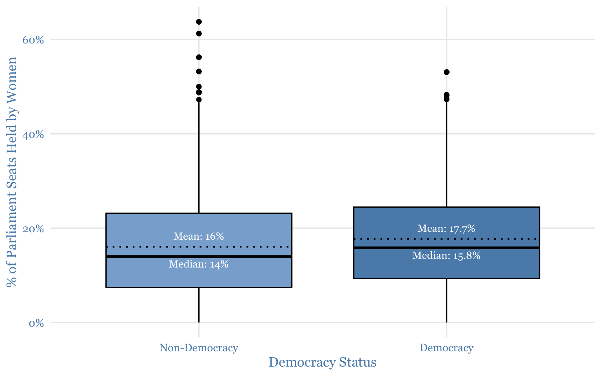
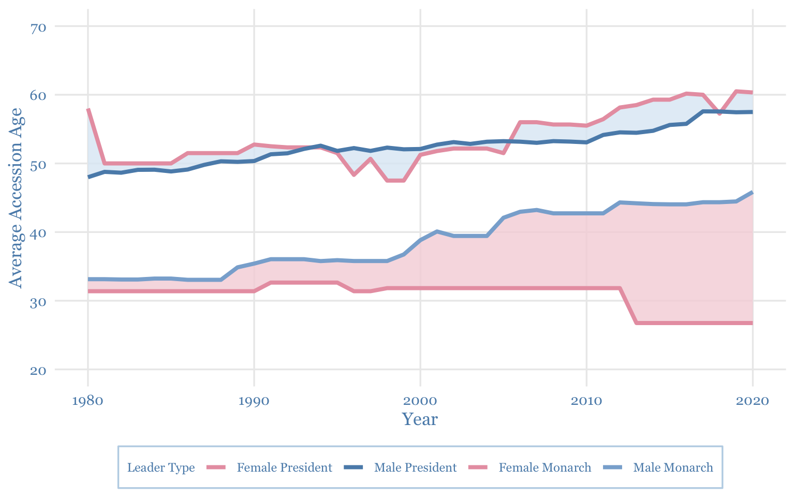
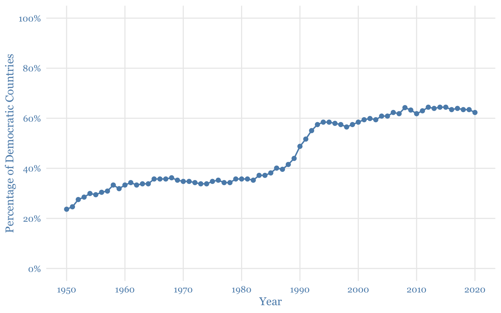
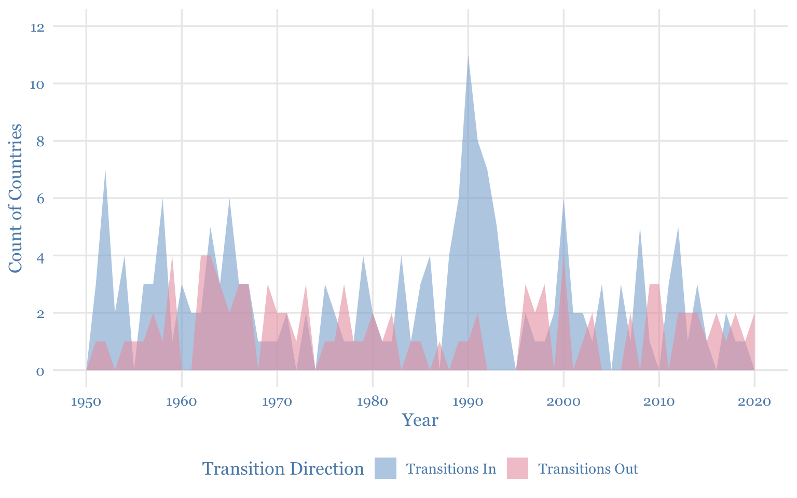
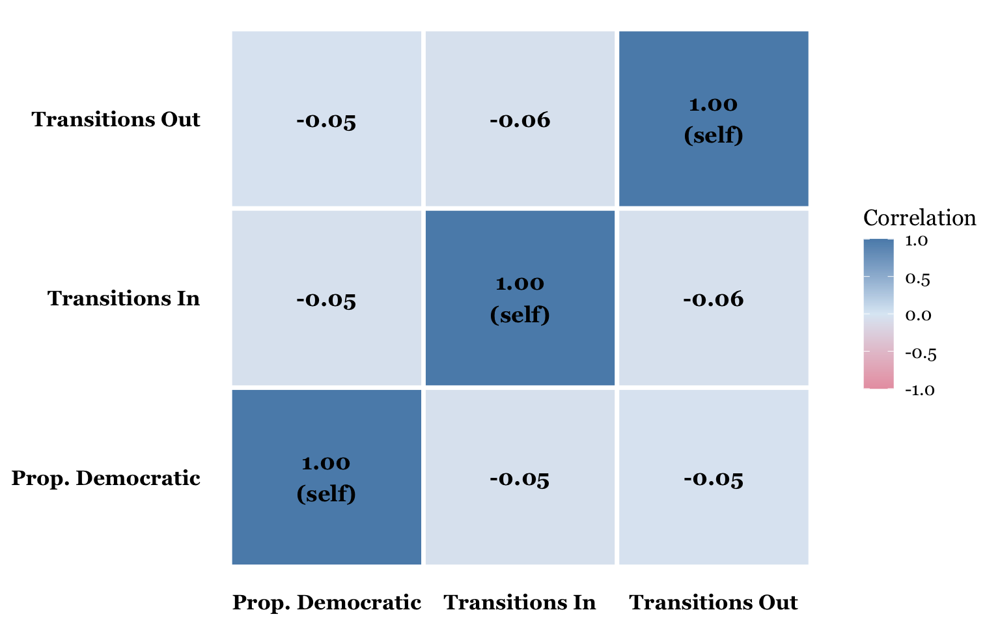

No female presidents were recorded before 1980, so this plot begins there.

| Table 1: Welch Two-Sample t-Test | ||||||
| Proportion of Parliament Seats Held by Women | ||||||
| Mean (Non-Dem.) |
Mean (Dem.) |
t | p-value1 | CI Low | CI High | df |
|---|---|---|---|---|---|---|
| 16.047 | 17.701 | −4.591 | 4.563 × 10−6 | −2.359 | −0.947 | 3,382.5 |
| 1 Highlighted p-value is statistically significant (p < 0.05). | ||||||
The t-test (t = -4.591, p < 0.001) confirms a statistically significant difference in women’s parliamentary representation between democratic and non-democratic countries. Democratic countries average 17.7% versus 16.0% for non-democracies, with a confidence interval that excludes zero.
| Table 2: Gender Gaps in Accession Age | |||||||
| Average Age When Leaders First Take Office | |||||||
| Status | N |
Presidents
|
Monarchs
|
||||
|---|---|---|---|---|---|---|---|
| Female | Male | Gap (M-F)1 | Female | Male | Gap (M-F)1 | ||
| Non-Democracy | 8,000 | 62.4 | 48.6 | −13.7 | 27.6 | 34.7 | 7.1 |
| Democracy | 6,706 | 54.2 | 57.0 | 2.8 | 31.0 | 38.7 | 7.7 |
| 1 Blue = males higher; pink = females higher. | |||||||
In non-democratic countries, female presidents take office nearly 14 years older than male presidents on average. In democracies, that gap shrinks to under 3 years. For monarchs, the pattern reverses — female monarchs tend to ascend younger, and the gap has been growing since 2000.
| Table 3: Gender Gaps by Decade | ||||
| Decade | Sample Size | Prop. Female President | Prop. Male President | Gap (M - F)1 |
|---|---|---|---|---|
| 1950-1959 | 2,080 | 0.0% | 100.0% | 100.0% |
| 1960-1969 | 2,080 | 0.0% | 100.0% | 100.0% |
| 1970-1979 | 2,080 | 0.1% | 99.9% | 99.8% |
| 1980-1989 | 2,080 | 1.7% | 98.3% | 96.6% |
| 1990-1999 | 2,080 | 2.2% | 97.8% | 95.5% |
| 2000-2009 | 2,080 | 4.4% | 95.6% | 91.2% |
| 2010-2020 | 2,288 | 7.0% | 93.0% | 86.1% |
| 1 Positive gap means more male than female presidents. Gap narrows across decades. | ||||



| Table 4: Democracy Transitions by Year | |||
| Proportion of Democracies and Transitions In and Out | |||
| Year | Prop. Democratic | Transitions In1 | Transitions Out |
|---|---|---|---|
| 1950 | 23.7% | 0 | 0 |
| 1951 | 24.6% | 3 | 1 |
| 1952 | 27.5% | 7 | 1 |
| 1953 | 28.5% | 2 | 0 |
| 1954 | 30.0% | 4 | 1 |
| 1955 | 29.5% | 0 | 1 |
| 1956 | 30.4% | 3 | 1 |
| 1957 | 30.9% | 3 | 2 |
| 1958 | 33.3% | 6 | 1 |
| 1959 | 31.9% | 1 | 4 |
| 1960 | 33.3% | 3 | 0 |
| 1961 | 34.3% | 2 | 0 |
| 1962 | 33.3% | 2 | 4 |
| 1963 | 33.8% | 5 | 4 |
| 1964 | 33.8% | 3 | 3 |
| 1965 | 35.7% | 6 | 2 |
| 1966 | 35.7% | 3 | 3 |
| 1967 | 35.7% | 3 | 3 |
| 1968 | 36.2% | 1 | 0 |
| 1969 | 35.3% | 1 | 3 |
| 1970 | 34.8% | 1 | 2 |
| 1971 | 34.8% | 2 | 2 |
| 1972 | 34.3% | 0 | 1 |
| 1973 | 33.8% | 2 | 3 |
| 1974 | 33.8% | 0 | 0 |
| 1975 | 34.8% | 3 | 1 |
| 1976 | 35.3% | 2 | 1 |
| 1977 | 34.3% | 1 | 3 |
| 1978 | 34.3% | 1 | 1 |
| 1979 | 35.7% | 4 | 1 |
| 1980 | 35.7% | 2 | 2 |
| 1981 | 35.7% | 1 | 1 |
| 1982 | 35.3% | 1 | 2 |
| 1983 | 37.2% | 4 | 0 |
| 1984 | 37.2% | 1 | 1 |
| 1985 | 38.2% | 3 | 1 |
| 1986 | 40.1% | 4 | 0 |
| 1987 | 39.6% | 0 | 1 |
| 1988 | 41.5% | 4 | 0 |
| 1989 | 44.0% | 6 | 1 |
| 1990 | 48.8% | 11 | 1 |
| 1991 | 51.7% | 8 | 2 |
| 1992 | 55.1% | 7 | 0 |
| 1993 | 57.5% | 5 | 0 |
| 1994 | 58.5% | 2 | 0 |
| 1995 | 58.5% | 0 | 0 |
| 1996 | 58.0% | 2 | 3 |
| 1997 | 57.5% | 1 | 2 |
| 1998 | 56.5% | 1 | 3 |
| 1999 | 57.5% | 2 | 0 |
| 2000 | 58.5% | 6 | 4 |
| 2001 | 59.4% | 2 | 0 |
| 2002 | 59.9% | 2 | 1 |
| 2003 | 59.4% | 1 | 2 |
| 2004 | 60.9% | 3 | 0 |
| 2005 | 60.9% | 0 | 0 |
| 2006 | 62.3% | 3 | 0 |
| 2007 | 61.8% | 1 | 2 |
| 2008 | 64.3% | 5 | 0 |
| 2009 | 63.3% | 1 | 3 |
| 2010 | 61.8% | 0 | 3 |
| 2011 | 63.0% | 3 | 0 |
| 2012 | 64.4% | 5 | 2 |
| 2013 | 63.9% | 1 | 2 |
| 2014 | 64.4% | 3 | 2 |
| 2015 | 64.4% | 1 | 1 |
| 2016 | 63.5% | 0 | 2 |
| 2017 | 63.9% | 2 | 1 |
| 2018 | 63.5% | 1 | 2 |
| 2019 | 63.5% | 1 | 1 |
| 2020 | 62.3% | 0 | 2 |
| 1 Blue = transitions into democracy; pink = transitions out of democracy. | |||
Transitions into democracy peaked sharply in the early 1990s following the end of the Cold War, while transitions out have persisted throughout every decade. Year-to-year fluctuations in transitions do not closely track the overall global proportion of democracies.
| Table 5: Democracy Transitions by Decade | |||
| Aggregated Transitions and Proportion Democratic | |||
| Decade Start | Prop. Democratic | Transitions In1 | Transitions Out |
|---|---|---|---|
| 1,950 | 29.0% | 29 | 12 |
| 1,960 | 34.7% | 29 | 22 |
| 1,970 | 34.6% | 16 | 15 |
| 1,980 | 38.5% | 26 | 9 |
| 1,990 | 55.9% | 39 | 11 |
| 2,000 | 61.1% | 24 | 12 |
| 2,010 | 63.6% | 17 | 16 |
| 2,020 | 62.3% | 0 | 2 |
| 1 Blue = transitions into democracy; pink = transitions out. The 1990s saw the largest wave of democratization. | |||
The 1990s stand out as the most transformative decade, with 39 transitions into democracy and only 11 out, reflecting the post-Cold War wave. The 1970s were the most stagnant period, with transitions in and out nearly balanced and virtually no net change in the global proportion.
| Table 6: Top 10 Countries by Democratic Transitions | |||
| Total Transitions Into and Out of Democracy, 1950–2020 | |||
| Country | Transitions In | Transitions Out | Total Transitions |
|---|---|---|---|
| Argentina | 4 | 4 | 8 |
| Thailand | 4 | 4 | 8 |
| Ghana | 4 | 3 | 7 |
| Pakistan | 4 | 3 | 7 |
| Peru | 4 | 3 | 7 |
| Guatemala | 3 | 3 | 6 |
| Honduras | 3 | 3 | 6 |
| Sudan | 3 | 3 | 6 |
| Guinea-Bissau | 3 | 2 | 5 |
| Guyana | 3 | 2 | 5 |
Argentina and Thailand experienced the most democratic transitions between 1950 and 2020, followed by Ghana, Pakistan, and Peru. Repeated regime shifts reflect political instability — democratization is not a steady or linear process.
| Table 7: Top 10 Countries by Democratic Transitions | |||
| Total Transitions Into and Out of Democracy, 1980–2010 | |||
| Country | Transitions In | Transitions Out | Total Transitions |
|---|---|---|---|
| Guinea-Bissau | 2 | 2 | 4 |
| Niger | 2 | 2 | 4 |
| Thailand | 2 | 2 | 4 |
| Albania | 2 | 1 | 3 |
| Burundi | 2 | 1 | 3 |
| Comoros | 2 | 1 | 3 |
| Nepal | 2 | 1 | 3 |
| Pakistan | 2 | 1 | 3 |
| Suriname | 2 | 1 | 3 |
| Turks and Caicos | 1 | 2 | 3 |
Even four or fewer transitions per country can indicate meaningful political instability. A key takeaway is that democratization requires not only becoming democratic, but sustaining democratic rule over time.
Overall, our analysis shows that democracy is related to gender representation and political stability, but not always in simple ways. Democratic countries had slightly higher average proportions of women in parliament than non-democratic countries, and the t-test showed that this difference was statistically significant. However, the actual difference in means was fairly small, suggesting that democracy alone does not guarantee equal representation. Female presidents became more common over time, but male presidents still made up the large majority of presidential leaders across every decade. Accession-age gaps were smaller and more stable among presidents, while monarchs showed larger differences by gender.
Our analysis of democratic transitions also showed that global democratization has been unpredictable. The percentage of democratic countries increased substantially from 1950 to 2020, especially around the late 1980s and early 1990s, but this growth was not steady. Countries continued to move both into and out of democracy over time, showing that democratization includes both progress and reversal. The country-level transition tables suggest that even a small number of regime changes can reflect meaningful political instability.
Taken together, these findings show that becoming a democratic country can be associated with greater gender representation and broader political change, but maintaining democratic rule and achieving gender equality remain ongoing challenges. Democracy may create more opportunities for representation, but the persistence of gender gaps and repeated regime transitions show that political progress is not automatic or permanent.
Honduras seems pretty interesting, out of the representative dataset. It had 6 transitions, both from and into democracy. The distance from the average difference in proportion of women in parliament from before 2005 and after 2020 was 0.5212923, which is pretty close to the average as well. So, it both represents the global trend for women in parliament pretty well, but acts as an outlier for the number of transitions from and to democracy.
We found data about Honduras through the World Bank Dataset, which includes data about over 1,300 categories about Honduras, including things about population breakdowns, social issues, climate change, and economic-related things. The data was collected from 1960-2025, and we cleaned it up to have each row represent one year. (https://data.worldbank.org/country/honduras)